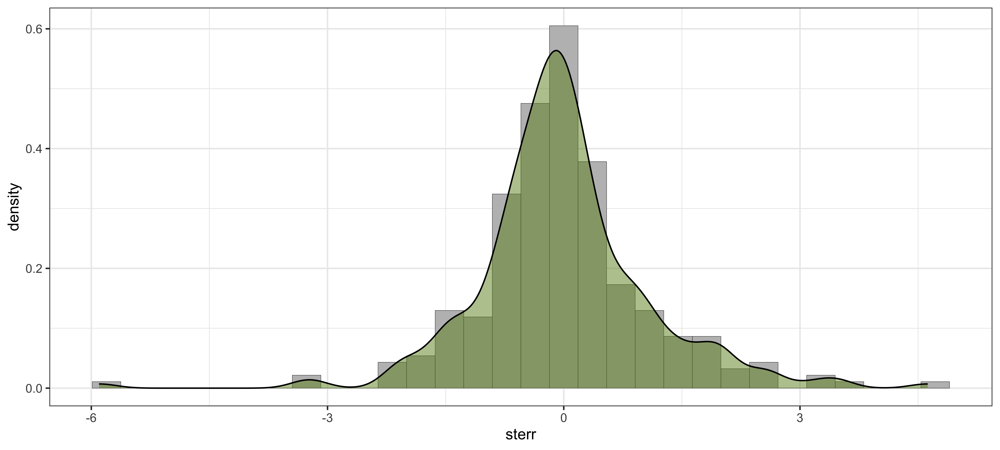

Геостатистика
Пространственная статистика
Самсонов Тимофей Евгеньевич
12 марта 2024 г.
Базовые компоненты
- Пространственные локации (точки) \[\{p_1, p_2, ..., p_n\}\]
- Данные в этих локациях \[\{Z(p_1), Z(p_2), ..., Z(p_n)\}\]
Обе компоненты в общем случае являются случайными
Случайная величина
Случайной величиной \(Z(w)\) называется функция, которая в результате случайного события \(w\) принимает некоторое вещественнозначное значение.
Например, при анализе температуры водоема в отдельно взятой точке в толще воды случайной величиной (функцией) является собственно температура, а событием — та совокупность физико-химических условий, которая сложилась в данной точке в момент измерений.
Элемент случайности вносится именно событием, которое в природе может быть чрезвычайно сложной и трудно предсказуемой комбинацией факторов, в то время как случайная величина связана с событием функциональной зависимостью.
Пространственная модель
\(p \in \mathbb{R}^k\) — точка в \(k\)-мерном Евклидовом пространстве
\(Z(p)\) — случайная величина в точке \(p\)
Если \(p\) меняется над индексным множеством \(D \subset \mathbb{R}^k\), то формируется случайный процесс:
\[ \{Z(p) | p \in D\} \]
Результат наблюдения случайного процесса в точках \(D\) является реализацией случайного процесса:
\[ \{z(p) | p \in D\} \]
В общем случае \(D\) и \(Z\) случайны и независимы
Случайный процесс (функция)
Случайный процесс — это семейство случайных величин, индексированных некоторым параметром \(t\)
Наиболее часто анализируются одномерные случайные процессы, в которых \(t\) — это время
Пример случайного процесса — температура не в один момент времени, а в течение некоторого промежутка времени
Пространственная статистика изучает случайные процессы, в которых \(t\) — это координата точки (обычно на плоскости)
Случайный процесс (функция)
В каждой точке \(p_i\) существует некоторая случайная величина \(Z(p_i)\) — сечение случайного процесса
При изменении точки \(p_i\) наблюдаемое значение случайного процесса меняется случайным образом, поскольку определяется оно не только местоположением, но и заранее неизвестным случайным событием
Большинство природных явлений показывают зависимость наблюдаемых значений от их взаимного местоположения, которая проявляется в наличии корреляции значений \(Z(\mathbf{p})\) и \(Z(\mathbf{p} + \mathbf{h})\), где \(\mathbf{h}\) — вектор смещения между точками
Тем короче \(h\), тем, как правило, сильнее выражена корреляция значений
Автокорреляция

Стьюдент в письме Карлу Пирсону (1900):
…В целом, корреляция ослабевает, если охват по времени или пространству увеличивается. Меня не покидает мысль, что было бы великим достижением установить закон, согласно которому корреляция будет ослабевать с увеличением охвата
Автокорреляция
Британский статистик и биолог Рональд Эйлмер Фишер изучал пространственное распределение характеристик растений на опытных площадках, будучи сотрудником Ротамстедской агрохимической станции в 1920-1930-е гг.
Стьюдент в письме Карлу Пирсону (1900):
…всестороннее подтверждение получил тот факт, что близко расположенные участки более схожи, чем удаленные, судя по данным об урожайности… следовательно, наиболее верным будет делать [выборочные] блоки максимально компактными_
Пространственная статистика
Геостатистика (geostatistics)
- \(D\) — фиксированное подмножество в \(\mathbb{R}^k\)
- \(Z(p)\) — случайный вектор в каждой точке \(p\)
- Исследуется пространственное распределение
Сеточные данные (lattice data)
- \(D\) — фиксированное счетное подмножество точек \(\mathbb{R}^k\)
- \(Z(p)\) — случайный вектор в каждой точке \(p\)
- Исследуется пространственная зависимость и гетерогенность
Конфигурации точек (point patterns)
- \(D\) — счетное подмножество точек \(\mathbb{R}^k\) (точечный процесс)
- \(Z(p)\) — константа или счетное множество (маркированный точечный процесс)
- Исследуется пространственное размещение
Математическое ожидание
Математическое ожидание — наиболее вероятная реализация случайного процесса:
\[ \operatorname E[Z(p)]=m(p) \]
Пусть дан географический регион, в котором производятся наблюдения температуры в течение месяца.
В каждый момент времени мы имеем непрерывное поле температуры — реализацию случайного процесса и относящиеся к ней данные наблюдений на метеостанциях
Осреднив данные за период наблюдений восстановим выборочное среднее поле распределения температур — оценку математического ожидания случайного процесса
Дисперсия
Дисперсия — мера разброса реализаций случайного процесса относительно его математического ожидания:
\[ \operatorname {Var}[Z(p)]= \operatorname E[Z^2(p)]-m^2(p) \]
Аналогично математическому ожиданию, дисперсия двумерного с.п. представляет собой поле распределения, значение которого в каждой точке равно дисперсии локального сечения с.п.
Ковариация
Ковариация — мера линейной зависимости сечений случайного процесса в двух точках \(p_1\) и \(p_2\):
\[ \operatorname {Cov}(p_1,p_2) = \operatorname {Cov}[Z(p_1), Z(p_2)] = \\\operatorname E[Z(p_1)Z(p_2)]-m(p_1)m(p_2) \]
Недостатком ковариации является необходимость знания математического ожидания с.п. Это условие выполняется далеко не всегда, что связано с тем что как правило приходится иметь дело только с одной реализацией с.п
Свойства моментов случайных процессов
Моменты пространственных случайных процессов являются функциями, а не константами, в отличие от моментов случайных величин.
Давать оценку пространственной структуре явления на основе вычисленных моментов с.п. можно только при условии, что он удовлетворяет свойствам стационарности и эргодичности.
Гипотеза стационарности
Функции корреляции между данными зависят только от взаимного расположения точек измерений, а не от их конкретного местоположения в пространстве.
В этом случае пространственная корреляция определяется вектором \(\mathbf{h}\) между точками.
Для изотропного случая, когда корреляция не зависит от направления, а только от расстояния вектор \(\mathbf{h}\) переходит в скаляр — расстояние \(d\).
Стационарность
Стационарность в строгом смысле означает что функция распределения множества случайных величин для любой комбинации точек \({x_1, x_2,...,x_k}\) и любого \(k < \infty\) остается неизменной при смещении этой комбинации на произвольный вектор \(h\):
\[ \operatorname P\{Z(x_1)<z_1,...,Z(x_k)<z_k\} = \\ \operatorname P\{Z(x_1 + h)<z_1,...,Z(x_k + h)<z_k\} \]
Стационарность
Стационарность по другому называют однородностью в пространстве, подразумевая что явление ведет себя одинаковым образом в любой точке пространства, как бы повторяет само себя.
Если с.ф. стационарна, все ее моменты будут инвариантны относительно сдвигов (то есть будут постоянны), а это означает что для их оценки можно использовать ограниченную в пространстве область.
В реальности же подобного рода «идеальное» поведение встречается крайне редко, поэтому используют более слабое предположение о стационарности второго порядка.
Стационарность второго порядка
Случайная функция имеет имеет стационарность второго порядка, если для любых точек \(x\) и \(x+h\) в \(R^k\)
\[ \begin{cases} \operatorname E[Z(x)] = m \\ \operatorname E[(Z(x)-m)(Z(x+h)-m)] = \operatorname C(h) \end{cases} \]
Математическое ожидание с.ф. постоянно, а ковариация зависит только от вектора \(h\) между точками и не зависит от их абсолютного положения.
Если ковариация также не зависит от направления, а только от расстояния между точками, то \(h\) вырождается в скаляр, а такая случайная функция является изотропной стационарной.
Эргодичность
Стационарная случайная функция \(Z(x,w)\) называется эргодической, если ее среднее по области \(V \subset R^k\) сходится к математическому ожиданию \(m(w)\) при стремлении \(V\) к бесконечности:
\[ \lim_{V \rightarrow \infty} \frac{1}{|V|}\int_{V} Z(x,w)dx = m(w) \]
\(|V|\) обозначает меру области \(V\) (площадь, объем). Предполагается что сама область \(V\) растет во всех направлениях, и предел ее роста не зависит от ее формы.
Cреднее по всем возможным реализациям равно среднему отдельной безграничной в пространстве реализации.
Эргодичность
Дан кувшин с песком, в котором необходимо определить долю объема, занятую содержимым.
Зафиксируем некоторую точку \(x\) в системе отсчета, привязанной к кувшину, и будем его встряхивать бесконечное число раз, каждый раз фиксируя, оказалась ли точка \(x\) внутри песчинки (записываем 1) или же попала в свободное между ними пространство (записываем 0)
Из серии подобных экспериментов мы сможем оценить среднее значение индикаторной функции \(\operatorname I(x,w)\), которое равно вероятности попадания зерна в точку \(x\), и которое не зависит от \(x\).
Эта вероятность и будет равна доли объема кувшина, занятой песком.
Эргодичность
Аналогичный результат можно получить, если теперь зафиксировать кувшин, а точку \(x\) выбирать каждый раз случайным образом.
В первом случае берется среднее по реализациям, а во втором — среднее по пространству.
В реальных экспериментах приходится иметь дело со вторым случаем.
Простой кригинг
Для оценки в точке \(z_0 = z(p_0)\) по \(N\) измерениям \(z_1, ..., z_N\) ищутся коэффициенты следующего выражения:
\[ Z^* = \sum_{i} \lambda_i Z_i + \lambda_0 \]
Константа \(\lambda_0\) и веса \(\lambda_i\) подобираются таким образом, что минимизируется среднеквадратическая ошибка:
\[ \operatorname E\big[(Z^* - Z_0)^2\big], \] то есть математическое ожидание квадрата отклонения оценки от реального значения в точке \(p_0\).
Простой кригинг
\[ Z^* = \sum_{i} \lambda_i Z_i + \lambda_0 \]
Используя соотношение \(\operatorname {Var}[X] = \operatorname E[X^2] - (\operatorname E[X])^2\), можно выразить среднюю квадратическую ошибку как:
\[ \operatorname E\big[(Z^* - Z_0)^2\big] = \operatorname{Var}[Z^* - Z_0] + (\operatorname E[Z^* - Z_0])^2 \]
Поскольку дисперсия нечувствительна к сдвигам, изменение константы \(\lambda_0\) влияет только на компоненту \(\operatorname E[Z^* - Z_0]\). Приравняем ее нулю:
\[ \operatorname E[Z^* - Z_0] = \operatorname E\Big[\sum_{i} \lambda_i Z_i + \lambda_0 - Z_0\Big] = 0 \]
Простой кригинг
\[ \operatorname E[Z^* - Z_0] = \operatorname E\Big[\sum_{i} \lambda_i Z_i + \lambda_0 - Z_0\Big] = 0 \]
Поскольку \(\lambda_0\) явялется константой, то по свойству мат. ожидания ее можно вынести за скобки:
\[ \lambda_0 = -\operatorname E\Big[\sum_{i} \lambda_i Z_i - Z_0\Big] = m_0 - \sum_i \lambda_i m_i, \]
где \(m_i\) — известные значения мат. ожиданий случайной функции в каждой точке исходных данных, \(m_0\) — известное мат. ожидание в интерполируемой точке.
Простой кригинг
Имея:
\[ Z^* = \sum_{i} \lambda_i Z_i + \lambda_0,\\ \lambda_0 = m_0 - \sum_i \lambda_i m_i, \]
Получаем:
\[ Z^* = \sum_{i} \lambda_i Z_i + m_0 - \sum_i \lambda_i m_i = \\ m_0 + \sum_{i} \lambda_i (Z_i - m_i) \]
Простой кригинг
\[ Z^* = m_0 + \sum_{i} \lambda_i (Z_i - m_i) \]
Поскольку константа \(m_0\) известна заранее, задачу оценки можно выполнить для переменной \(Y(p) = Z(p) - m(p)\), используя линейную оценку
\[ Y^* = \sum_{i} \lambda_i Y_i, \]
и прибавляя к полученному результату \(m_0\).
Основной вопрос заключается в нахождении коэффициентов \(\lambda_i\).
Простой кригинг
Поскольку мы показали, что компонента \(\operatorname E[Z^* - Z_0]\) может быть приравнена нулю, среднеквадратическая ошибка равна дисперсии:
\[ \operatorname E\big[(Z^* - Z_0)^2\big] = \operatorname{Var}[Z^* - Z_0] \]
Используя свойства:
- \(\operatorname{Var}[X + Y] = \operatorname{Var}[X] + \operatorname{Var}[Y] + 2 \operatorname{Cov}[X, Y]\),
- \(\operatorname{Var}[-X] = \operatorname{Var}[X]\),
- \(\operatorname{Cov}[X, -Y] = -\operatorname{Cov}[X, Y]\), получаем:
\[ \operatorname{Var}[Z^* - Z_0] = \operatorname{Var}[Z^*] + \operatorname{Var}[Z_0] - 2 \operatorname{Cov}[Z^*, Z_0] \]
Простой кригинг
\[ \operatorname{Var}[Z^* - Z_0] = \operatorname{Var}[Z^*] + \operatorname{Var}[Z_0] - 2 \operatorname {Cov}[Z^*, Z_0] \]
Распишем компоненты этого выражения в терминах ковариации.
Пусть \(X_1,\ldots, X_n\) случайные величины, а \(Y_1 = \sum\limits_{i=1}^n a_i X_i,\; Y_2 = \sum\limits_{j=1}^m b_j X_j\) — их две произвольные линейные комбинации. Тогда:
\[ \operatorname {Cov}[Y_1,Y_2] = \sum\limits_{i=1}^n\sum\limits_{j=1}^m a_i b_j \operatorname {Cov}[X_i,X_j]\].
Простой кригинг
\[ \operatorname{Var}[Z^* - Z_0] = \operatorname{Var}[Z^*] + \operatorname{Var}[Z_0] - 2 \operatorname{Cov}[Z^*, Z_0] \]
Распишем компоненты этого выражения в терминах ковариации.
\(\operatorname{Var}[Z^*] = \operatorname{Cov}[Z^*, Z^*] = \operatorname{Cov}\Big[\sum_{i} \lambda_i Z_i, \sum_{j} \lambda_j Z_j\Big] = \\ \sum_{i}\sum_{j} \lambda_i \lambda_j \operatorname{Cov}[Z_i, Z_j] = \sum_{i}\sum_{j} \lambda_i \lambda_j \sigma_{ij}\)
\(\operatorname{Var}[Z_0] = \operatorname{Cov}[Z_0, Z_0] = \sigma_{00}\)
\(\operatorname{Cov}[Z^*, Z_0] = \operatorname{Cov}\Big[\sum_{i} \lambda_i Z_i, Z_0\Big] =\\ \sum_{i} \lambda_i \operatorname{Cov}[Z_i, Z_0] = \sum_{i} \lambda_i \sigma_{i0}\)
Простой кригинг
Таким образом, выражение для ошибки
\[ \operatorname{Var}[Z^* - Z_0] = \operatorname{Var}[Z^*] + \operatorname{Var}[Z_0] - 2 \operatorname{Cov}[Z^*, Z_0] \]
Трансформируется в
\[ \operatorname{Var}[Z^* - Z_0] = \sum_{i}\sum_{j} \lambda_i \lambda_j \sigma_{ij} - 2 \sum_{} \lambda_i \sigma_{i0} + \sigma_{00} \]
Для нахождения минимума этой квадратичной функции необходимо приравнять нулю ее производные по основной переменной \(\lambda\). Выберем в качестве «жертвы» коэффициенты с индексом \(i\):
\[ \frac{\partial}{\partial \lambda_i} \operatorname E\big[(Z^* - Z_0)^2\big] = 2 \sum_{j} \lambda_j \sigma_{ij} - 2 \sigma_{i0} = 0 \]
Простой кригинг
\[ \frac{\partial}{\partial \lambda_i} \operatorname E\big[(Z^* - Z_0)^2\big] = 2 \sum_{j} \lambda_j \sigma_{ij} - 2 \sigma_{i0} = 0 \]
Таким образом, система уравнений простого кригинга для точки \(Z_0\) имеет вид:
\[ \color{red}{\boxed{\color{blue}{\sum_{j} \lambda_j \sigma_{ij} = \sigma_{i0}\color{gray}{,~i = 1,...,N}}}} \]
Уравнения простого кригинга носят чисто теоретический характер. На практике используется метод обычного кригинга, в котором знание среднего значения случайной функции не требуется.
Дисперсия простого кригинга
Существует возможность оценить в каждой точке не только величину показателя, но также дисперсию оценки (в случае постоянного мат. ожидания — среднеквадратическую ошибку).
Для этого необходимо коэффициенты \(\lambda_i\), полученные из системы уравнения простого кригинга
\[ \sum_{j} \lambda_j \sigma_{ij} = \sigma_{i0} \]
подставить в выражение среднеквадратической ошибки
\[ \operatorname{Var}[Z^* - Z_0] = \sum_{i}\sum_{j} \lambda_i \lambda_j \sigma_{ij} - 2 \sum_{} \lambda_i \sigma_{i0} + \sigma_{00} \]
Дисперсия простого кригинга
Умножим обе части каждого уравнения простого кригинга на \(\lambda_i\) и просуммируем все уравнения по \(i\):
\[ \sum_{j} \lambda_j \sigma_{ij} = \sigma_{i0}~\Bigg|\times \lambda_i\\ \sum_{i}\sum_{j} \lambda_i \lambda_j \sigma_{ij} = \sum_{i}\lambda_i\sigma_{i0} \]
Заметим, что левая часть уравнения присутствует в выражении среднеквадратической ошибки:
\[ \operatorname{Var}[Z^* - Z_0] = \color{red}{\sum_{i}\sum_{j} \lambda_i \lambda_j \sigma_{ij}} - 2 \sum_{} \lambda_i \sigma_{i0} + \sigma_{00} \]
Дисперсия простого кригинга
Заменим \(\sum_{i}\sum_{j} \lambda_i \lambda_j \sigma_{ij}\) на \(\sum_{i}\lambda_i\sigma_{i0}\) в выражении для СКО:
\[ \operatorname{Var}[Z^* - Z_0] = \color{red}{\sum_{i}\sum_{j} \lambda_i \lambda_j \sigma_{ij}} - 2 \sum_{} \lambda_i \sigma_{i0} + \sigma_{00} =\\ \sum_{i}\lambda_i\sigma_{i0} - 2 \sum_{} \lambda_i \sigma_{i0} + \sigma_{00} \]
Отсюда получаем выражение для дисперсии (ошибки) простого кригинга:
\[ \color{red}{\boxed{\color{blue}{\sigma_{SK} = \operatorname{Var}[Z^* - Z_0] = \sigma_{00} - \sum_{i}\lambda_i\sigma_{i0}}}} \]
Стационарность приращений
Стационарность второго порядка требует знания математического ожидания для вычисления ковариации. В ряде случаев оценить математическое ожидание оказывается невозможно (оно может не существовать) или же оно действительно оказывается непостоянным.
Тогда пользуются еще более мягкой формой стационарности — стационарностью приращений, при которой стационарной предполагается не сама с.ф. \(Z(x)\), а производная от нее функция:
\[Y_h(x) = Z(x+h)-Z(x)\]
Функция \(Z(x)\), обладающая таким свойством, называется подчиняющейся внутренней гипотезе.
Стационарность приращений
У функции \(Y_h(x) = Z(x+h)-Z(x)\) должны существовать математическое ожидание и дисперсия приращений:
\[ \begin{cases} \operatorname E[Z(x+h)-Z(x)] = \langle a,h \rangle \\ \operatorname {Var}[Z(x+h)-Z(x)] = 2\gamma(h) \end{cases} \]
\(\langle a,h \rangle\) обозначает линейный тренд \(a\) при заданном векторе \(h\) (математическое ожидание разности значений), который выражается через скалярное произведение: \(\langle a,h \rangle = \sum_i a_i h_i\)
\(\gamma(h)\) — дисперсия приращений, называемая вариограммой
Стационарность приращений
\[ \begin{cases} \operatorname E[Z(x+h)-Z(x)] = \langle a,h \rangle \\ \operatorname {Var}[Z(x+h)-Z(x)] = 2\gamma(h) \end{cases} \]
Если процесс подчиняется гипотезе стационарности второго рода \(\operatorname E[Z(x)] = m\), то \(\operatorname E[Z(x+h)-Z(x)] = \operatorname E[Y_h(x)] = 0\) и вариограмму можно выразить следующим образом:
\[ 2\gamma(h) = \operatorname {Var}[Z(x+h)-Z(x)] = \operatorname {Var}[Y_h(x)] \\= \operatorname E\big[Y_h(x)\big]^2 - \Big(\operatorname E\big[Y_h(x)\big]\Big)^2 \\= \operatorname E\big[Y_h(x)\big]^2 = \operatorname E\big[Z(x+h)-Z(x)\big]^2 \]
Стационарность приращений
Таким образом, наиболее распространенная в геостатистике гипотеза подчиняется следующим условиям:
\[ \begin{cases} \operatorname E\big[Z(x)\big] = m\\ \operatorname E\big[Z(x+h)-Z(x)\big] = 0 \\ \operatorname E\big[Z(x+h)-Z(x)\big]^2 = 2\gamma(h) \end{cases} \]
Эти условия позволяют избавиться от необходимости знания среднего значения и дисперсии случайной функции и использовать для вычислений вариограмму.
Чтобы модифицировать соответствующим образом уравнения простого кригинга, необходимо знать связь между ковариацией и вариограммой.
Переход от ковариации к вариограмме
Рассмотрим ковариацию двух линейных комбинаций с.ф.:
\[ \operatorname {Cov} \Bigg[\sum_{\alpha=1}^N \lambda_{\alpha} Z(x_{\alpha}), \sum_{\beta=1}^M \mu_{\beta} Z(x_{\beta}) \Bigg] = \sum_{\alpha=1}^N \sum_{\beta=1}^M \lambda_{\alpha} \mu_{\beta} \operatorname C(x_{\beta} - x_{\alpha}) \]
Используя правило \(\operatorname {Cov}[X + \alpha, Y + \beta] = \operatorname {Cov}[X, Y]\), введем условное начало координат:
\[ \sum_{\alpha=1}^N \sum_{\beta=1}^M \lambda_{\alpha} \mu_{\beta} \operatorname C(x_{\beta} - x_{\alpha}) =\\ =\sum_{\alpha=1}^N \sum_{\beta=1}^M \lambda_{\alpha} \mu_{\beta} \operatorname {Cov} \big[Z(x_{\alpha}) - Z(x_0), Z(x_{\beta}) - Z(x_0)\big] \]
Переход от ковариации к вариограмме
Распишем ковариацию через математические ожидания, учитывая, что, согласно гипотезе, \(\operatorname E\big[Z(x+h)-Z(x)\big] = 0\):
\[ \operatorname {Cov} \big[Z(x_{\alpha}) - Z(x_0), Z(x_{\beta}) - Z(x_0)\big] =\\ = \operatorname E\big[Z_{\alpha} - Z_0\big]\big[Z_{\beta} - Z_0\big] - \operatorname E\big[Z_{\alpha} - Z_0\big] \operatorname E\big[Z_{\beta} - Z_0\big] = \\ = \operatorname E\big[Z_{\alpha} - Z_0\big]\big[Z_{\beta} - Z_0\big] \]
Обратим внимание, что произведение приращений можно выразить через квадраты приращений:
\[ \color{blue}{(Z_{\beta} - Z_{\alpha})^2} = \big[(Z_{\beta} - Z_0) - (Z_{\alpha} - Z_0)\big]^2 = \\ = \color{blue}{(Z_{\alpha} - Z_0)^2} - 2\color{red}{(Z_{\alpha} - Z_0)(Z_{\beta} - Z_0)} + \color{blue}{(Z_{\beta} - Z_0)^2} \]
Переход от ковариации к вариограмме
Имеем:
\[ (Z_{\alpha} - Z_0)(Z_{\beta} - Z_0) = \frac{1}{2} \Big[(Z_{\alpha} - Z_0)^2 + (Z_{\beta} - Z_0)^2 - (Z_{\beta} - Z_{\alpha})^2\Big] \]
Учитывая, что \(\operatorname E\big[Z(x+h)-Z(x)\big]^2 = 2\gamma(h)\), подставим это выражение в формулу вычисления ковариации:
\[ \operatorname {Cov} \big[Z(x_{\alpha}) - Z(x_0), Z(x_{\beta}) - Z(x_0)\big] = \operatorname E\big[Z_{\alpha} - Z_0\big]\big[Z_{\beta} - Z_0\big] = \\ = \frac{1}{2} \operatorname E \Big[(Z_{\alpha} - Z_0)^2 + (Z_{\beta} - Z_0)^2 - (Z_{\beta} - Z_{\alpha})^2\Big] = \\ = \gamma(x_{\alpha} - x_0) + \gamma(x_{\beta} - x_0) - \gamma(x_{\beta} - x_{\alpha}) \]
Переход от ковариации к вариограмме
Подставим полученное выражение в двойную сумму:
\[ \sum_{\alpha=1}^N \sum_{\beta=1}^M \lambda_{\alpha} \mu_{\beta} \operatorname {Cov} \big[Z(x_{\alpha}) - Z(x_0), Z(x_{\beta}) - Z(x_0)\big] = \\ = \sum_{\alpha=1}^N \sum_{\beta=1}^M \lambda_{\alpha} \mu_{\beta} \big[\gamma(x_{\alpha} - x_0) + \gamma(x_{\beta} - x_0) - \gamma(x_{\beta} - x_{\alpha})\big] = \\ = \color{blue}{\underbrace{\sum_{\alpha=1}^N \sum_{\beta=1}^M \lambda_{\alpha} \mu_{\beta} \gamma(x_{\alpha} - x_0)}_0} + \color{red}{\underbrace{\sum_{\alpha=1}^N \sum_{\beta=1}^M \lambda_{\alpha} \mu_{\beta} \gamma(x_{\beta} - x_0)}_0} - \sum_{\alpha=1}^N \sum_{\beta=1}^M \lambda_{\alpha} \mu_{\beta} \gamma(x_{\beta} - x_{\alpha}) = \\ = - \sum_{\alpha=1}^N \sum_{\beta=1}^M \lambda_{\alpha} \mu_{\beta} \gamma(x_{\beta} - x_{\alpha}), \]
Переход от ковариации к вариограмме
Подставим полученное выражение в двойную сумму:
\[ \sum_{\alpha=1}^N \sum_{\beta=1}^M \lambda_{\alpha} \mu_{\beta} \operatorname {Cov} \big[Z(x_{\alpha}) - Z(x_0), Z(x_{\beta}) - Z(x_0)\big] = \\ = - \sum_{\alpha=1}^N \sum_{\beta=1}^M \lambda_{\alpha} \mu_{\beta} \gamma(x_{\beta} - x_{\alpha}), \]
\(\sum_{\alpha=1}^N \sum_{\beta=1}^M \lambda_{\alpha} \mu_{\beta} \gamma(x_{\alpha} - x_0) = \color{blue}{\underbrace{\sum_{\beta=1}^M \mu_{\beta}}_0} \sum_{\alpha=1}^N \lambda_{\alpha} \gamma(x_{\alpha} - x_0) = 0\)
\(\sum_{\alpha=1}^N \sum_{\beta=1}^M \lambda_{\alpha} \mu_{\beta} \gamma(x_{\beta} - x_0) = \color{red}{\underbrace{\sum_{\alpha=1}^N \lambda_{\alpha}}_0} \sum_{\beta=1}^M \mu_{\beta} \gamma(x_{\beta} - x_0) = 0\)
Переход от ковариации к вариограмме
В линейных комбинациях приращений сумма коэффициентов всегда равна \(0\), поскольку это справедливо для каждого приращения.
Для \(\alpha = 1\):
\[ \lambda_1 (x_1 - x_0) = \lambda_1 x_1 - \lambda_1 x_0 = \sum_{k=0}^1 \rho_k x_k, \]
где \(\rho_0 = -\lambda_1\), \(\rho_1 = \lambda_1\). Следовательно:
\[ \sum_{k=0}^1 \rho_k = 0 \]
Переход от ковариации к вариограмме
Стационарный случай:
\[ \operatorname {Cov} \Bigg[\sum_{\alpha=1}^N \lambda_{\alpha} Z(x_{\alpha}), \sum_{\beta=1}^M \mu_{\beta} Z(x_{\beta}) \Bigg] = \sum_{\alpha=1}^N \sum_{\beta=1}^M \lambda_{\alpha} \mu_{\beta} \operatorname C(x_{\beta} - x_{\alpha}) \]
Внутренняя гипотеза:
\[ \operatorname {Cov} \Bigg[\sum_{\alpha=1}^N \lambda_{\alpha} Z(x_{\alpha}), \sum_{\beta=1}^M \mu_{\beta} Z(x_{\beta}) \Bigg] = - \sum_{\alpha=1}^N \sum_{\beta=1}^M \lambda_{\alpha} \mu_{\beta} \gamma(x_{\beta} - x_{\alpha}) \]
При соблюдении внутренней гипотезы в уравнениях кригинга можно принять \(\sigma_{\alpha \beta} = -\gamma_{\alpha \beta}\)
Обычный кригинг
Пусть дано неизвестное среднее \(m = a_0\). Необходимо произвести линейную оценку \(Z^* = \sum_{i} \lambda_i Z_i + \lambda_0\). Выразим среднюю квадратическую ошибку:
\[ \operatorname E\big[(Z^* - Z_0)^2\big] = \operatorname {Var}[Z^* - Z_0] + \big(E[Z^* - Z_0]\big)^2 =\\ = \operatorname {Var}[Z^* - Z_0] + \Bigg[\lambda_0 + \bigg(\sum_i \lambda_i - 1 \bigg) a_0 \Bigg]^2 \]
- Только компонента сдвига \(\operatorname E[Z^* - Z_0]\) содержит \(\lambda_0\), однако, в отличие от случая простого кригинга, мы не можем минимизировать ее, не зная \(a_0\).
- Единственный способ избавиться от \(a_0\) заключается в том, чтобы наложить дополнительное условие \(\sum \lambda_i - 1 = 0\)
Обычный кригинг
Минимизируем ранее введенную функцию ошибки:
\[ \operatorname {Var}[Z^* - Z_0] = \sum_{i}\sum_{j} \lambda_i \lambda_j \sigma_{ij} - 2 \sum_{} \lambda_i \sigma_{i0} + \sigma_{00} \]
Для этого, с учетом дополнительного условия \(\sum \lambda_i - 1 = 0\) применим метод множителей Лагранжа и построим вспомогательную функцию:
\[ Q = \operatorname {Var}[Z^* - Z_0] + 2\mu \bigg(\sum_i \lambda_i - 1 \bigg), \]
где \(\mu\) – неизвестный множитель Лагранжа.
Обычный кригинг
\[ Q = \operatorname {Var}[Z^* - Z_0] + 2\mu \bigg(\sum_i \lambda_i - 1 \bigg)\]
Для минимизации функции приравняем нулю ее частные производные:
\[ \begin{cases}\frac{\partial Q}{\partial \lambda_i} = 2 \sum_j \lambda_j \sigma_{ij} - 2 \sigma_{i0} + 2\mu = 0,~i = 1,...,N,\\ \frac{\partial Q}{\partial \mu} = 2\bigg(\sum_i \lambda_i - 1 \bigg) = 0 \end{cases} \]
Обычный кригинг
Имеем \(N + 1\) уравнений с \(N + 1\) неизвестными:
\[ \begin{cases}\sum_j \lambda_j \sigma_{ij} + \mu = \sigma_{i0},~i = 1,...,N,\\ \sum_i \lambda_i = 1 \end{cases} \]
Заменяя ковариацию на вариограмму, получаем систему уравнений обычного кригинга:
\[ \color{red}{\boxed{\color{blue}{\begin{cases}\sum_j \lambda_j \gamma_{ij} - \mu = \gamma_{i0},\color{gray}{~i = 1,...,N,}\\ \sum_i \lambda_i = 1 \end{cases}}}} \]
Это наиболее часто используемый в геостатистике метод оценки
Дисперсия обычного кригинга
Вывод формулы для оценки дисперсии обычного кригинга выполняется аналогично случаю простого кригинга. Умножим \(N\) первых уравнений на \(\lambda_i\), просуммируем их по \(i\):
\[ \sum_j \lambda_j \gamma_{ij} - \mu = \gamma_{i0}~\Bigg|\times \lambda_i \]
Учтя дополнительное условие \(\sum_i \lambda_i = 1\), получаем выражение для оценки дисперсии (ошибки) обычного кригинга:
\[ \color{red}{\boxed{\color{blue}{\sigma_{OK} = \operatorname {Var}[Z^* - Z_0] = \sum_{i}\lambda_i\gamma_{i0} - \mu}}} \]
Универсальный кригинг
В методе универсального кригинга осуществляется декомпозиция переменной \(Z(x)\) в виде следующей суммы:
\[ Z(x) = m(x) + Y(x) \]
\(m(x)\) — дрифт (drift), гладкая детерминированная функция, описывающая систематическую составляющую пространственной изменчивости явления;
\(Y(x)\) - остаток (residual), случайная функция с нулевым математическим ожиданием, описывающая случайную составляющую пространственной изменчивости явления;
Декомпозиция любого явления на дрифт и остаток зависит от масштаба рассмотрения явления.
Универсальный кригинг
Метод универсального кригинга используется, когда математическое ожидание случайного процесса непостоянно по пространству. Это позволяет интерполировать данные, в которых присутствует тренд.
В предположении, что м.о. имеет функциональную зависимость от других процессов в точке \(x\), вводится следующая модель:
\[ m(x) = \sum_{k=0}^{K} a_k f^k(x), \]
где \(f^k(x)\) — известные базисные функции, а \(a_k\) — фиксированные для точки \(x\), но неизвестные коэффициенты.
Универсальный кригинг
\[ m(x) = \sum_{k=0}^{K} a_k f^k(x), \]
Обычно первая базисная функция при \(k = 0\) представляет собой константу, равную 1. Это позволяет включить в модель случай постоянного м.о.
Если среднее зависит только от местоположения, то оставшиеся функции \(f^k(x), k > 0\), как правило, представляют собой одночлены от координат (например, для двумерного случая \(f^2(p) = x^2 + y^2\))
Коэффициенты \(a_k\) могут меняться в зависимости от \(x\), но обязательно медленно, чтобы их можно было считать постоянными в окрестности \(x\).
Универсальный кригинг
В качестве дрифта \(m(x)\) можно использовать не только функцию от местоположения, но также значения внешней переменной — ковариаты.
Например, количество осадков можно связать с высотой точки \(H(x)\) следующей моделью:
\[ Z(x) = a_0 + a_1 H(x) + Y(x) \]
С статистической точки зрения это линейная регрессия, в которой остатки коррелированы (автокоррелированы).
В литературе данный метод называют также регрессионным кригингом (regression kriging), а оценка дрифта — пространственной регрессией (spatial regression).
Универсальный кригинг
Для вывода уравнений рассмотрим среднеквадратическую ошибку:
\[ \operatorname E[Z^* - Z_0]^2 = \operatorname {Var}[Z^* - Z_0] + \big(\operatorname E[Z^* - Z_0]\big)^2 \]
Используя введенную модель дрифта \(m(x) = \sum_{k=0}^{K} a^k f^k(x)\) распишем выражение для мат.ожидания приращений:
\[ \operatorname E[Z^* - Z_0] = \operatorname E[Z^*\big] - \operatorname E[Z_0] = \\ \sum_i \lambda_i \sum_k a_k f_i^k - \sum_k a_k f_0^k = \sum_k a_k \Bigg(\sum_i \lambda_i f_i^k - f_0^k\Bigg) \]
Универсальный кригинг
\[ \operatorname E[Z^* - Z_0] = \sum_k a_k \Bigg(\sum_i \lambda_i f_i^k - f_0^k\Bigg) \]
Чтобы минимизировать \(\operatorname E[Z^* - Z_0]\) независимо от коэффициентов \(a_k\), достаточно в вышеприведенной формуле приравнять нулю выражение в скобках. Отсюда имеем:
\[\sum_i \lambda_i f_i^k = f_0^k,~k = 0, 1, ..., K.\]
Эти условия называются условиями универсальности. Отсюда идет название метода — универсальный кригинг
Условия универсальности гаранируют, что оценка \(Z^*\) является несмещенной для любых значений \(a_k\).
Универсальный кригинг
Минимизируем ранее введенную функцию ошибки:
\[ \operatorname {Var}[Z^* - Z_0] = \sum_{i}\sum_{j} \lambda_i \lambda_j \sigma_{ij} - 2 \sum_{} \lambda_i \sigma_{i0} + \sigma_{00} \]
Для этого, с учетом дополнительного условия \(\sum_i \lambda_i f_i^k = f_0^k\) применим метод множителей Лагранжа и построим вспомогательную функцию:
\[Q = \operatorname {Var}[Z^* - Z_0] + 2 \sum_{k=0}^K \mu_k \Bigg[ \sum_i \lambda_i f_i^k - f_0^k\Bigg],\]
где \(\mu_k,~k = 0, 1, ..., K\) представляют \(K + 1\) дополнительных неизвестных, множители Лагранжа.
Универсальный кригинг
\[ \operatorname {Var}[Z^* - Z_0] = \sum_{i}\sum_{j} \lambda_i \lambda_j \sigma_{ij} - 2 \sum_{} \lambda_i \sigma_{i0} + \sigma_{00} \]
Для минимизации функции приравняем нулю ее частные производные:
\[ \begin{cases}\frac{\partial Q}{\partial \lambda_i} = 2 \sum_j \lambda_j \sigma_{ij} -2 \sigma_{i0} + 2 \sum_k \mu_k f_i^k = 0,\color{gray}{~i = 1,...,N,}\\ \frac{\partial Q}{\partial \mu} = 2\bigg[\sum_i \lambda_i f_i^k - f_0^k \bigg] = 0\color{gray}{,~k = 0, 1,..., K.} \end{cases} \]
Универсальный кригинг
Имеем систему из \(N + K + 1\) уравнений с \(N + K + 1\) неизвестными:
\[ \begin{cases}\sum_j \lambda_j \sigma_{ij} + \sum_k \mu_k f_i^k = \sigma_{i0},~i = 1,...,N,\\ \sum_i \lambda_i f_i^k = f_0^k,~k = 0, 1,..., K. \end{cases} \]
Заменяя ковариацию на вариограмму, получаем систему уравнений универсального кригинга:
\[ \color{red}{\boxed{\color{blue}{\begin{cases}\sum_j \lambda_j \gamma_{ij} - \sum_k \mu_k f_i^k = \gamma_{i0},\color{gray}{~i = 1,...,N,}\\ \sum_i \lambda_i f_i^k = f_0^k\color{gray}{,~k = 0, 1,..., K.} \end{cases}}}} \]
Дисперсия универсального кригинга
Вывод формулы для оценки дисперсии универсального кригинга выполняется аналогично случаю обычного кригинга. Умножим \(N\) первых уравнений на \(\lambda_i\), просуммируем их по \(i\):
\[ \sum_j \lambda_j \gamma_{ij} - \sum_k \mu_k f_i^k = \gamma_{i0} ~ \Bigg|\times \lambda_i \]
Учтя дополнительное условие \(\sum_i \lambda_i f_i^k = f_0^k\), получаем выражение для оценки дисперсии (ошибки) универсального кригинга:
\[ \color{red}{\boxed{\color{blue}{\sigma^2_{UK} = E[Z^* - Z_0]^2 = \sum_{i}\lambda_i\gamma_{i0} - \sum_k \mu_k f_0^k}}} \]
Диаграмма рассеяния с лагом
Lagged scatterplot — вариант диаграммы рассеяния, на котором показываются значения в точках, расстояние между которыми попадает в заданный интервал
Вариограммное облако
Квадрат разности значений как функция от расстояния между точками

Эмпирическая вариограмма
Эмпирическая вариограмма рассчитывается путем разбиения вар. облака на интервалы расстояний — лаги — и подсчета среднего значения \(\gamma\) в каждом лаге:

Эмпирическая вариограмма
\[\hat{\gamma} = \frac{1}{2N_h} \sum_{x_i - x_j \approx h} \big[z(x_i) - z(x_j)\big]^2\]

Размер точки означает количество пар значений, которые попали в каждый лаг.
Эмпирическая вариограмма
Поскольку вариограмма есть дисперсия разности значений, ее рост можно оценить также по увеличению размера «ящика» на диаграмме размаха \(\sqrt\gamma\):
Вариокарта
Вариокарта (variogram map, variomap) представляет вариограмму как функцию приращений координат: \[\hat{\gamma} (\Delta x, \Delta y) = \frac{1}{2N_{\substack{\Delta x\\ \Delta y}}} \sum_{\substack{\Delta x_{ij} \approx \Delta x\\ \Delta y_{ij} \approx \Delta y}} \big[z(p_i) - z(p_j)\big]^2\]
Вариокарта используется для выявления пространственной анизотропии. Профиль по линии из центра к краю вариокарты даст эмпирическую вариограмму
Эмпирическая и теоретическая вариограмма
В уравнениях кригинга нельзя использовать эмпирическую вариограмму.
Это связано с тем, что уравнения ординарного (обычного) кригинга выводятся из предположения о том, что вариограмма является условно положительно определенной функцией.
Выполнение этого условия нельзя гарантировать для эмпирической кривой.
Необходимо использовать теоретическую функцию — модель вариограммы — которая отвечает условной положительной определенности.
Модель вариограммы выбирается исходя из формы эмпирической вариограммы.
Свойства вариограммы
\[\gamma (\mathbf{h}) = \gamma(\mathbf{x}, \mathbf{x + h}) = \operatorname E\big[Z(x + h)-Z(x)\big]^2\]
Исходя из определения \(\gamma\), можно вывести ряд обязательных свойств модели:
Вариограмма симметрична:
\[\gamma(\mathbf{h}) = \gamma(-\mathbf{h})\]
Вариограмма связана с дисперсией:
\[\gamma(\infty) = \operatorname{Var}\big[ Z(\mathbf{x}) \big]\]
Вариограмма связана с ковариацией:
\[\gamma(\mathbf{h}) = \operatorname{Var}\big[Z(\mathbf{x}) \big] - \operatorname C(\mathbf{h})\]
Приближение теоретической модели
Приближение (fitting) модели вариограммы предполагает:
- Выбор теоретической модели
- Подбор параметров модели: эффект самородка (nugget), радиус корреляции ( \(a\) или range) и плато (sill).
Сферическая модель
\[\gamma(h) = \begin{cases} c_0 + c\Big[\frac{3h}{2a} - \frac{1}{2}\big(\frac{h}{a}\big)^3\Big], & h \leq a; \\ c_0 + c, & h > a. \end{cases}\]
\[\gamma(a) = \operatorname{Var}[Z(p)] = c_0 + c\]
Экспоненциальная модель
\[\gamma(h) = \begin{cases} 0, & h = 0; \\ c_0 + (c-c_0)\Big[1 - \exp\big(\frac{-3h}{a}\big)\Big], & h \neq 0. \end{cases}\]
\[\gamma(a) = \operatorname{Var}[Z(p)] = c_0 + c\]

Экспоненциальная модель
- Данная модель достигает плато асимптотически.
- В точке \(h = a\) достигается \(95\%\) уровня плато.
Гауссова модель
\[\gamma(h) = c_0 + c\Bigg[1 - \exp\bigg(\frac{-3h^2}{a^2}\bigg)\Bigg]\]
Гауссова модель
- Данная модель достигает плато асимптотически.
- В точке \(h = a\) достигается \(95\%\) уровня плато.
- Отличительной чертой этой модели является ее гладкость: параболическое поведение вблизи нуля и асимптотическое приближение к плато.
Степенная модель
\[\gamma(h) = \begin{cases} 0, & h = 0; \\ c h^\alpha, & h \neq 0. \end{cases}\]
Степенная модель
- Автокорреляция присутствует на всех расстояниях: \(a \rightarrow \infty\)
- Предположение о стационарности второго порядка не выполняется
- Как правило, это означает наличие тренда в данных
Эффект самородка (модель наггет)
\[\gamma(h) = \begin{cases} 0, & h = 0; \\ c_0, & h \neq 0. \end{cases}, ~ c_0 = C(0)\]
Эффект самородка (модель наггет)
- Наличие у данных вариограммы типа наггет означает отсутствие пространственной корреляции.
- Возможные причины:
- Абсолютно случайное распределение
- Мелкомасштабная вариабельность (меньше, чем расстояние между измерениями)
- Ошибки в измерениях
- Ошибки в координатах точек
Автоматическое приближение
Дана вариограмма семейства \(\gamma (h; \mathbf{b})\), где \(\mathbf{b} = (b_1, ..., b_k)\) — вектор из \(k\) параметров модели. Параметры \(\mathbf{b}\) подбираются таким образом, чтобы минимизировать следующий функционал:
\[Q(\mathbf{b}) = \sum_{l=1}^{L} w_l \big[\hat{\gamma}(h_l) - \gamma (h; \mathbf{b})\big]^2,\]
где \(\big\{\hat{\gamma} (h_l): l = 1,...,L\big\}\) — значения эмпирической вариограммы для \(L\) лагов, вычисленные по \(N(h_l)\) векторам.
Веса \(w_l\) обычно выбираются исходя из отношения \(w_l = N(h_l) / |h_l|\), чтобы придать большее значение коротким расстояниям и лагам с хорошей оценкой.
Автоматическое приближение
\[Q(\mathbf{b}) = \sum_{l=1}^{L} w_l \big[\hat{\gamma}(h_l) - \gamma (h; \mathbf{b})\big]^2\] Минимизация функционала осуществляется итеративно:
- Процесс начинается с некоторого предположения \(\mathbf{b}^{(0)}\)
- На шаге \(s\) функция \(Q\) аппроксимируется в виде квадратичной формы \(Q(\mathbf{b}^{(s)}) \approx \sum_{i=1}^k \sum_{j=1}^k \delta_{ij} b_i b_j\) путем разложения в ряд Тейлора вокруг точки \(\mathbf{b}^{(s)}\).
- Новая точка минимума \(\mathbf{b}^{(s+1)}\) находится как минимум квадратичной формы (этот минимум один).
Шаги 2-3 повторяются до тех пор, пока значение \(Q\) не станет меньше заданного порога.
Автоматическое приближение
Сравним результат ручного и автоматического приближения вариограммы:
Обычный кригинг
Рассмотрим данные по температуре:
Обычный кригинг
Визуализируем найденную вариограмму:
Обычный кригинг
Визуализируем найденную вариокарту:
Обычный кригинг
Проинтерполируем, используя приближенную модель вариограммы:
[using ordinary kriging]stars object with 2 dimensions and 2 attributes
attribute(s):
Min. 1st Qu. Median Mean 3rd Qu. Max.
var1.pred -0.4091735 7.707571 18.83325 21.50978 32.07393 67.26636
var1.var 30.9929191 45.435980 52.71968 58.67491 65.48474 186.22488
dimension(s):
from to offset delta refsys x/y
x 1 213 332239 2000 WGS 84 / UTM zone 32N [x]
y 1 99 5121556 -2000 WGS 84 / UTM zone 32N [y]Оценка кригинга
Дисперсия кригинга
Дисперсия кригинга высока там, где мало данных
Среднеквадратическое отклонение кригинга
Для удобства интерпретации можно взять корень из дисперсии
Кросс-валидация
Значение переменной \(Z(x)\) оценивается в каждой точке \(x_i\) по данным в соседних точках \(Z(x_j), ~ j \neq i\) как если бы \(Z(x_i)\) было неизвестно.
В каждой точке вычисляется оценка кригинга \(Z_{-i}^*\) и соответствующая дисперсия кригинга \(\sigma_{Ki}^2\). Поскольку значение \(Z_i = Z(x_i)\) известно, мы можем вычислить:
- Ошибку кригинга \(E_i = Z_{-i}^* - Z_i\)
- Стандартизированную ошибку \(e_i = E_i / \sigma_{Ki}\)
Если \(\gamma(h)\) — теоретическая вариограмма, то \(E_i = Z_{-i}^* - Z_i\) — случайная величина с м.о. = \(0\) и дисперсией \(\sigma_{Ki}^2\), а \(e_i\) имеет м.о. = \(0\) и дисперсию, равную \(1\).
Кросс-валидация
- Ошибка кригинга \(E_i = Z_{-i}^* - Z_i\)
- Стандартизированная ошибка \(e_i = E_i / \sigma_{Ki}\)
Стандартно анализируются следующие карты и графики:
Карта стандартизированных ошибок \(e_i\). Стационарность ошибок, отсутствие эффекта пропорциональности.
Гистограмма стандартизированных ошибок \(e_i\). Нормальность распределения, отсутствие аномалий.
Диаграмма рассеяния \((Z_{-i}^*, Z_i)\). Сглаживающий эффект, соответствие оценки и реального значения.
Диаграмма рассеяния \((Z_{-i}^*, e_i)\). Независимость (ортогональность) оценки и ошибки.
Кросс-валидация
Для выполнения кросс-валидации воспользуемся функцией krige.cv:
var1.pred var1.var observed residual zscore fold sterr
1 5.743730 34.84033 6.0 0.25627005 0.04341669 1 0.04341669
2 11.137129 60.24070 10.0 -1.13712865 -0.14650910 2 -0.14650910
3 6.929502 47.22732 7.0 0.07049833 0.01025846 3 0.01025846
4 23.252858 48.06354 1.0 -22.25285758 -3.20979954 4 -3.20979954
5 15.655167 56.76258 1.0 -14.65516724 -1.94517957 5 -1.94517957
6 11.794241 44.03055 1.0 -10.79424095 -1.62672846 6 -1.62672846
7 11.325378 62.65261 0.1 -11.22537769 -1.41818009 7 -1.41818009
8 28.421330 75.24988 0.2 -28.22133030 -3.25330355 8 -3.25330355
9 2.340115 58.30350 1.0 -1.34011550 -0.17550719 9 -0.17550719
10 3.489972 62.96551 0.2 -3.28997242 -0.41461106 10 -0.41461106Кросс-валидация
Cтандартизированные ошибки в стационарном случае должны быть распределены нормально:
Кросс-валидация
Ошибки должны быть независимы от значений:
Кросс-валидация
Облако рассеяния оценки относительно истинных значений должно быть компактным:
Кросс-валидация
Пространственная картина стандартизированных ошибок должна быть гомогенной:
Библиография
Самсонов Т. Е. Пространственная статистика: курс лекций